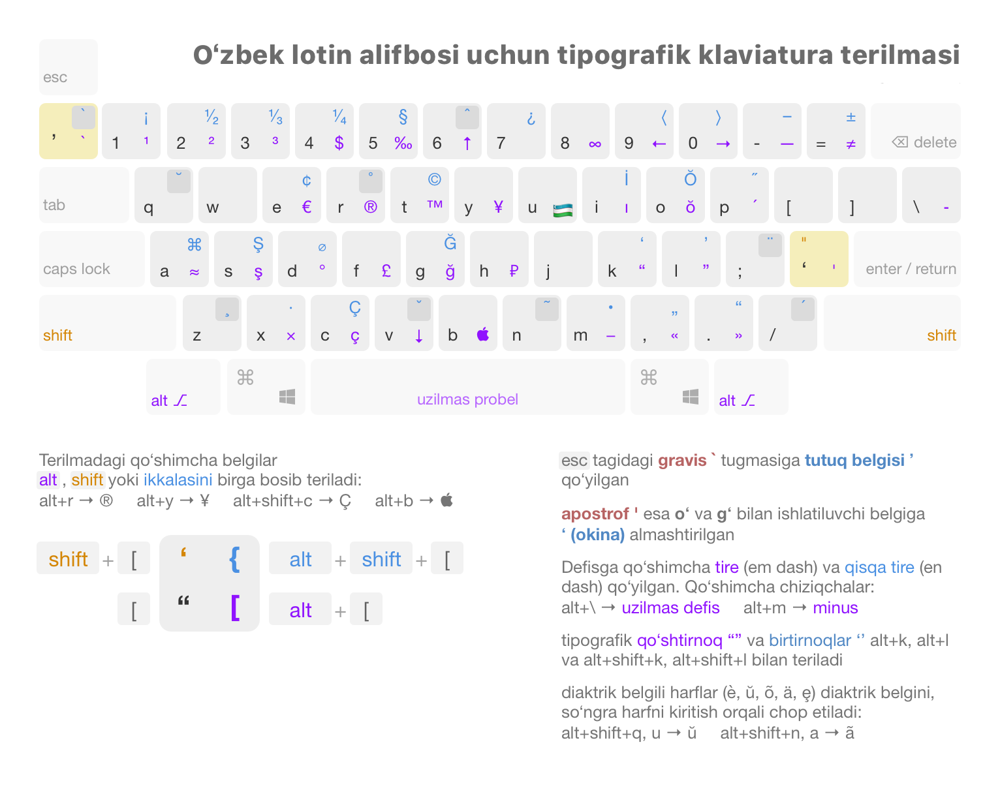
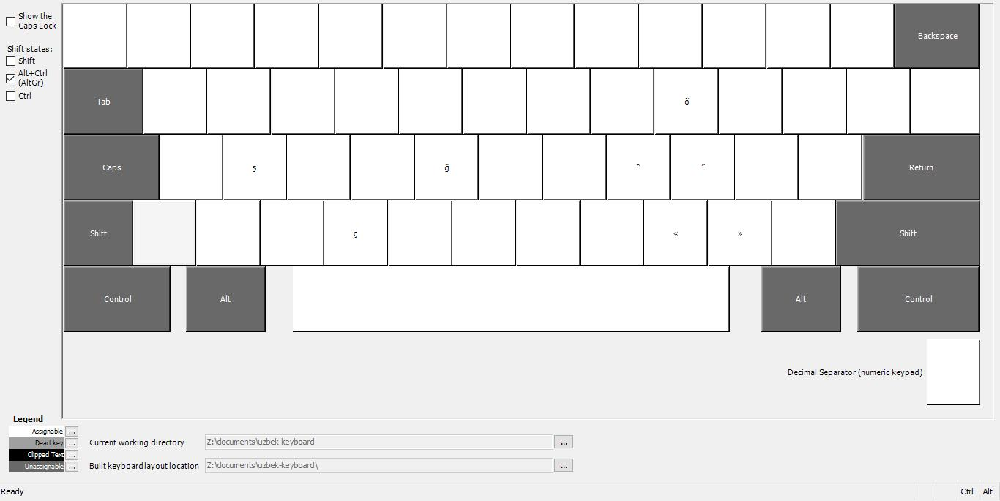
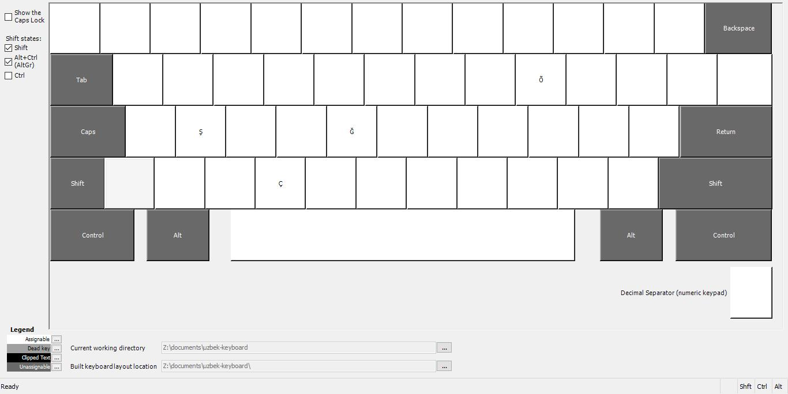

2023-yildagi alifbo yangilanişlarini va maxsus belgilarga tez kirişni özida jamlagan, tipografik jihatdan töğri özbek klaviatura layouti.

AltGr, kök rangli
tugmalar
Shift+AltGr
ni talab qiladi.
AltGr →
Ş, Ç, Ö, Õ, Ğ, İ. AltGr+` → ʼ (tutuq belgisi).
AltGr+' → ʻ (Oʻ/Gʻ da işlatiladi). Shuningdek,
tire, « » burçakli qöştirnoqlar, egri qöştirnoqlar, yuqori
indekslar va valyuta belgilari.
AltGr kerak emas. W→Ş/ş,
[→Õ/õ, ]→Ğ/ğ.
dvp) layoutiga mos keladi, ya'ni belgilar qatori
va harflarning Dvorak'dagi joylaşuvi özgarmaydi. Özbekçaga xos
harflar va tipografik qöşimçalar Standard dagi kabi
AltGr da joylaşgan.
Bu repozitoriyni flake.nix faylingizga flake input
sifatida qöşing:
# flake.nix { inputs = { ... # Add this line to your inputs uzbek-keyboard.url = "github:mirrrjr/uzbek-linux-and-windows-keyboard"; } outputs = { ... # Add this line to your outputs uzbek-keyboard, } @ inputs: { nixosConfigurations."nixos" = nixpkgs.lib.nixosSystem { modules = { ... # Add this line to your modules uzbek-keyboard.nixosModules.module } } } }
Keyin taqdim etilgan layoutlarni
configuration.nix fayliga qöşib işlatişingiz mumkin:
# configuration.nix services.xserver.xkb.uz-enhanced.enable = true;
Xuddi şu Uzbek (Standard) layoutining Windows versiyasi
ham mavjud, u
Microsoft Keyboard Layout Creator
yordamida yaratilgan. U Linux layoutini aynan takrorlaydi: asosi oddiy
US QWERTY, özbek harflari, punktuatsiya va tipografik qöşimçalar esa
AltGr da. Eslatma: Programmer Dvorak
varianti hozircha faqat Linux uçun mavjud.
setup.exe ni yuklab oling.
More info → Run anyway ni
tanlang.
Settings → Time & Language → Language & Region
ni oçing, tilingizni bosing → Options, keyin
Add a keyboard ni bosib, Uzbek (AltGr) ni
tanlang.
Win + Space orqali unga almaşing.


Örnatişdan keyin tizimdan çiqib, qayta kirişingiz kerak bölişi mumkin.
Keyin tizimingizning
Settings → Keyboard (yoki Input Sources)
bölimiga ötib, "Uzbek" ni qidiring va kerakli layout
variantini qöşing (masalan, Uzbek (Programmer Dvorak)).
Agar boşqa distributiv, desktop muhit yoki Windows versiyasida sinab körgan bölsangiz, issue yoki PR oçib, natijani bildiring.
Bu loyiha itsbilolbek/uzbek-linux-keyboard muallifining asl özbek XKB layouti asosida qurilgan.
Katta rahmat, Bilolbek — asl lotin, 2023 va kirill layoutlarisiz bu loyiha bölmasdi!
Bu loyiha MIT litsenziyasi ostida tarqatiladi. Batafsil ma'lumot uçun LICENSE fayliga qarang.